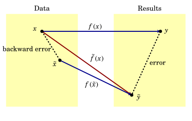
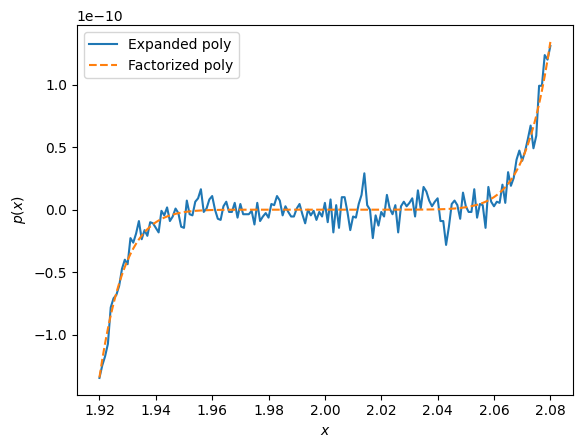

1. Computation fundamentals#
There are several sources of errors in computation:
roundoff, a consequence of our digital representation of numbers,
conditioning, a property of the problem, and
stability, a property of the algorithm we use.
Additional resource
Trefethen and Bau’s Numerical Linear Algebra, Chapters 12-14.
1.1 Floating-point arithmetic#
Computers work in terms of floating-point numbers instead of reals \(\mathbb{R}\).
Let’s say \(\circ\) is an operator that rounds the real number \(x \in \mathbb{R}\) to the nearest floating-point number \(\tilde{x}\):
The absolute error induced by this representation is
and the relative error is
We can rearrange this as
The IEEE (Institute of Electrical and Electronics Engineers) standard guarantees that
where \(\varepsilon_M\) is machine precision.
Question
Where does \(\varepsilon_M\) come from, and what is it in single and double precision arithmetic?
Numbers in floating-point arithmetic are represented as
where \(n\) is the exponent, \(f\) is the mantissa, and \(s\) is the sign, which together define the number. The constant \(b\) is predetermined (we’ll see how), and is called the bias.
A fixed number of bits called the binary precision, denoted \(d_f\), is then used to store \(f\) in base 2:
It’s useful to pull out a constant \(2^{-d_f}\) to get
where \(z\) is now an integer.
Question
What values can \(z\) take? How many numbers are there between \(2^n\) and \(2^{n+1}\)? What does that say about the relationship between \(\varepsilon_M\) and \(d\)?
\(z\) takes values in \( z \in \{0, 1, 2, \ldots, 2^{d} - 1\}\), therefore there are \(2^d\) integers between two adjacent powers of \(2\) in floating-point arithmetic. From this we can read off that
In single precision, \(d = 23\) bits are used to represent the mantissa, therefore \(\varepsilon_M \approx 2\cdot 10^{-7}\) and from \(\mu_M\) we expect each number to be accurate to around 7 digits. For double precision, \(d = 52\) and numbers can be trusted to 16 digits.
1.2 Conditioning of a problem; condition number#
Conditioning is entirely the property of a problem; it tells you how accurate an anwer you can expect from “ideal” (i.e. backwards-stable) algorithms solving it.
“Problem” in this context is a map:
\(X\) is the set of input parameters/space defining the problem (all the information you need to solve it),
\(Y\) is the space of solutions.
\(f\) could for example be
a function that doubles its input, \(f(x) = 2x\), or
a function that returns the roots of a polynomial defined via a vector \(\mathbb{x}\) of its coefficients, or
a mapping between an initial value problem (say, an ODE and its initial conditions) and its set of solutions.
The conditioning of \(f\) is the sensitivity of its output \(f(x)\) to perturbations in its input \(x\). If the perturbation in the input \(x\) is \(\delta x\), then the change in the output is \(\delta f := f(x + \delta x) - f(x)\).
The absolute condition number is defined as
If \(x \in \mathbb{C}^n\), \(f \in \mathbb{C}^m\) are \(n\)- and \(m\)-dimensional vectors, respectively (meaning: there are multiple inputs and/or outputs), then we can measure how a perturbation in any of the inputs affects any of the outputs via the Jacobian matrix \(J_{ij} \in \mathbb{C}^{m \times n}\),
A more practical quantity is the relative condition number, defined as
For scalar functions \(f\), this simplifies to \(\kappa(x) = \left|\frac{xf'(x)}{f(x)}\right|.\)
Question
Why do we care about perturbations in the input? Aren’t problems (e.g. functions) mostly defined exactly?
Due to floating-point representation (roundoff) error, there is always at least \(\mu_M\) relative uncertainty/error in the input.
Question
What does the condition number depend on? Does it depend on the precision (single, double) we use?
The condition number tells you how much this error is amplified by the problem. It is only a function of the problem and the data, and not the algorithm/computer/precision. If the perturbation \(\delta x \ll 1\), then
so if \(\kappa = 10^d\), we expect to lose \(d\) digits of accuracy in computing \(f\) from \(x\).
We say that a problem is
Question
What happens if \(\kappa \approx 1/\mu_M\)?
If \(\kappa \approx 1/\mu_M\), we do not expect any useful digits in the answer, and the function \(f\) is essentially uncomputable…
Question
What to do if this happens but we still need to compute \(f\) to some useful digits?
… unless we raise the precision and hence lower \(\varepsilon_M\) (e.g. single to double, double to quad).
Let’s have a look at the conditioning of some common operations.
Question
What’s the condition number of
\(f(x) = 2x\),
\(f(x) = x^{\alpha}\),
\(f(x_1, x_2) = x_1 - x_2\),
\(f(x) = \sin(x)\) for, say, \(x = 10^{100}\),
\(f(x) = Ax\) (where \(A\) is an \(m \times m\) matrix),
\(f\), if \(f(x)\) returns the solution of \(Ax = b\) given a matrix \(A\) and a vector \(b\)?
For \(f(x) = 2x\), \(J = f' = 2\), so \(\kappa = \left|\frac{2x}{2x}\right| = 1\), always well-conditioned.
For \(f(x) = x^{\alpha}\), \(J = f' \propto \alpha\), \(\kappa = |\alpha|\) is well-conditioned for reasonable powers \(\alpha\),
Now there are multiple inputs (\(n = 2\)) but a single output (\(m = 1\)), so we have \(J = [ 1 -1]\), \(||J|| = \sqrt{2},\) and \(\kappa = \frac{\sqrt{2}\sqrt{x_1^2 + x_2^2}}{|x_1 - x_2|}\), which \(\to \infty\) as \(x_1 \to x_2 \neq 0\)! So this problem becomes ill-conditioned for close-by inputs. This is a well-known phenomenon called subtractive or catastrophic cancellation.
\(f(x) = \sin(x)\), \(||J|| \leq 1\), but \(\kappa = \frac{||J|||x|}{|\sin(x)|} \geq |x|\) gets huge with increasing \(x\). Note, however, that the absolute convergence number is just \(\leq 1\).
\(f(x) = Ax\), so \(J = A\). Then \(\kappa = ||A|| \frac{||x||}{||Ax||}\). If \(A\) is non-singular, \(\kappa \leq ||A||||A^{-1}||\), since \(||x|| = ||A^{-1} Ax|| \leq ||A^{-1}||||Ax||\).
Question
When is there an exact equality?
Solving a linear system. \(Ax = b\), so \(f(b) = A^{-1}b\). We can use the previous result (replace \(A\) with \(A^{-1}\)) to get \(\kappa \leq ||A^{-1}||||A||.\)
Question
What was perturbed in the above calculation of \(\kappa\)? Is there another quantity we can vary and define a cond. no. in terms of?
We may also perturb \(A\) instead of \(b\). If the input is \(A\), output is \(x\) (\(b\) const.), then consider an infinitesimal change in the input, \(A + \delta A\) causing an infinitesimal change in output, \(x + \delta x\):
1.3 Stability#
Stability is entirely the property of the algorithm used to solve a problem. If an algorithm is stable, this loosely means that it gets the right answer, even if it is not exact.
Let’s say we have a fixed
problem, \(f: X \to Y\), e.g. \(y = \sin x\) or \(y\) solves \(Ay = b\),
floating-point repserentation (with a given precision),
algorithm for \(f\), a map \(\tilde{f}: X \to Y\), with steps
\[ x \to \circ x \to \tilde{f} (x). \]
Then the relative error of the computation is
Aside
Formally, the “big O” notation means that there exists a constant \(c\) such that answer is \(\leq c\mu_M\) as \(\mu_M \to 0\), uniformly over all input data \(x \in X\).
Question
Is it reasonable to demand this?
If the problem, however, is ill-conditioned, this is not a reasonable ask. Even if the algorithm were to give an exact answer, the answer will not have a relative error of \(\mathcal{O}(\mu_M)\).
So instead we define and algorithm as stable if \(\forall x \in X\),
Meaning that the algorithm gives “nearly the right answer to nearly the right question”.
A stronger requirement for an algorithm is to be backwards stable, i.e. \(\forall x \in X\)
The expression “backwards stable” comes from the related concept of backward error. Using the above notation, if there is a value \(\tilde{x}\) such that \(\tilde{f}(x) = f(\tilde{x})\), then the relative backward error is

Question
Is the floating-point subtraction, \(\ominus\) backwards stable?
The exact problem is \(f(x_1, x_2) = x_1 - x_2\).
The algorithm is \(\tilde{f}(x_1, x_2) = \circ{x_1} \ominus \circ{x_2} = \left[x_1(1+\varepsilon_1) - x_2(1 + \varepsilon_2)\right](1 + \varepsilon_3)\), where \(|\varepsilon_i| \leq \mu_M\) for each \(i = 1, 2, 3.\)
By renaming, write as \(x_1(1 + \varepsilon_4) - x_2(1 + \varepsilon_5)\), where \(|\varepsilon_j| \leq 2\mu_M\) for \(j = 4, 5\), which is \(f(\tilde{x}_1, \tilde{x}_2)\), i.e. exact for some data close to \(x_1\), \(x_2\). The subtraction algorithm is therefore backwards stable.
Question
Can backwards stable algorithms produce large relative errors \(\frac{||\tilde{f}(x) - f(x)||}{||f(x)||}\)? If so, how?
Absolutely! The only way this can happen though, is if \(\kappa\) is very large. An important result is that
Theorem
If a backwards stable algorithm using floating-point representation is used to solve problem \(f(x)\) with relative condition number \(\kappa(x)\), then the resulting relative error satisfies
Proof: Backwards stability means that
Let’s revisit the subtraction example to see this in action:
x1 = 3.0000000000006
x2 = 3.0000000000005
x1 - x2
9.992007221626409e-14
We see a large relative error (we know the correct answer is \(10^{-13}\)) in the computed vs. the exact answer, but we have shown that subtraction is backwards stable. The result is entirely due to the large \(\kappa\) of the problem. If \(x_1\) were only about \(8\cdot 10^{-17}\) larger though, which is a small difference relative to the true \(x_1\) (a small backward error), the answer produced by the algorithm would be correct. Meaning: it found an exact solution to a nearby problem, the best thing we can hope for when dealing with an ill-conditioned problem.
Question
Consider the polynomial
Let’s check this:
import numpy as np
import matplotlib.pyplot as plt
%matplotlib inline
# Expanded poly
p_exp = lambda x: x**9 - 18*x**8 + 144*x**7 - \
672*x**6 + 2016*x**5 - 4032*x**4 + \
5376*x**3 - 4608*x**2 + 2304*x - 512
# Factorized poly
p_fact = lambda x: (x - 2)**9
x = np.arange(1.920, 2.080, 0.001)
p_exp_arr = p_exp(x)
p_fact_arr = p_fact(x)
plt.figure()
plt.plot(x, p_exp_arr, label = "Expanded poly")
plt.plot(x, p_fact_arr, '--', label = "Factorized poly")
plt.xlabel("$x$")
plt.ylabel("$p(x)$")
plt.legend()
plt.show()

What’s going on? We are very close to the roots of the poynomial, so the scale of the \(y\)-axis is \(10^{-10}\), and we observe differences between the two evaluation methods of order \(10^{-11}\), with the factorized evaluation giving a visibly smoother curve.
The jitter in the expanded polynomial is due to huge catastrophic cancellation. The coefficients of the polynomial are up to \(\approx 10^5\), and they are all input parameters, with respect to which (or wrt \(x\)) the condition number of \(p(x)\) is large (check this yourself!). Imagine if you were a computer: you would need to convert all those input data (the coeffs and \(x\)) to floating-point numbers first, introducing some rounding error, which then gets magnified by the large \(\kappa\).
On the other hand, \((x-2)^9\) only takes in \(3\) parameters, and we have seen that neither \(x - 2\) (with \(x\) close to \(2\)), nor \(x^9\) has a dramatically high condition number (only \(\approx 10^2\)). The algorithms involved (addition, subtraction) are stable, so error can only creep in through poor conditioning.
Exercises
If the relative condition number of the real-valued functions \(f\) and \(g\) are \(\kappa_f\) and \(\kappa_g\) respectively, show that for \(h(x) = f(g(x))\),
The polynomial \(p(x) = a_0 + a_1x + \ldots + a_nx^n\) has a root \(x = r\). What is the (relative) condition number of the root \(r\) with respect to perturbations in the coefficient \(a_k\), keeping all other coefficients constant? Simplify your answer as much as possible. Deduce when root finding problems become ill-conditioned (there are multiple cases here!).
Consider the machine algorithm (that uses floating-point representation) for subtracting \(1\) from a real number. You’ll investigate whether it’s stable and backwards stable.
a) The exact problem (a mapping \(f: X \mapsto Y\)) is \( f(x) = 1 - x. \) Write down in words the steps of the machine algorithm \(\tilde{f}\) that computes the difference. Express \(\tilde{f}(x)\) in terms of the input \(x\).
b) What does \(\tilde{f}(x)\) have to equal, in terms of a floating-point number close to \(x\) denoted \(\tilde{x},\) for the algorithm to be backwards stable?
c) By expressing \(\tilde{x}\) in terms of \(x\) and some small relative roundoff error \(\varepsilon\) (\(|\varepsilon| \leq \mu_M\)), eliminate \(\tilde{x}\) from the above result. To first order in small quantities, what does \(\varepsilon\) have to equal for backwards stability? Is this \(\varepsilon\) always \(\mathcal{O}(\mu_M)\) (i.e. for all \(x\), uniformly)? What does this mean for the backwards stability of this algorithm?
d) What is the condition for stability in terms of \(f\), \(\tilde{f}\), \(x\), and \(\tilde{x}\)?
e) Is this algorithm stable? Show your work.